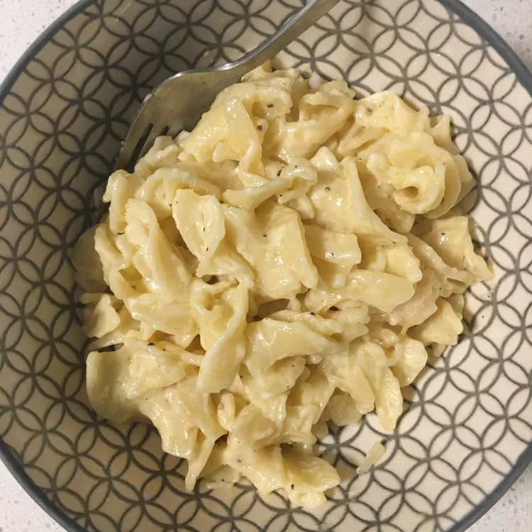

Lemon Pasta Sauce

Description
This lemon pasta sauce is deliciously creamy and tastes wonderful tossed with your favorite pasta. Add cubes of cooked chicken or veggies, if desired.
Ingredients
- 1 cup beef broth
- 1 cup heavy whipping cream
- 4 tablespoons butter
- 2 tablespoons fresh lemon juice
- 1 teaspoon lemon zest
- 1 teaspoon grated lime zest
- 10 ounces uncooked pasta
Steps
- Combine broth, cream, and butter in a large saucepan or skillet. Bring to a simmer over medium heat; cook until reduced by about half. Stir in lemon juice, lemon zest, and lime zest. Set sauce aside.
- Bring a large pot of lightly salted water to a boil. Add pasta and cook until tender yet firm to the bite, 8 to 10 minutes; drain.
- Add pasta to sauce and toss until well coated.